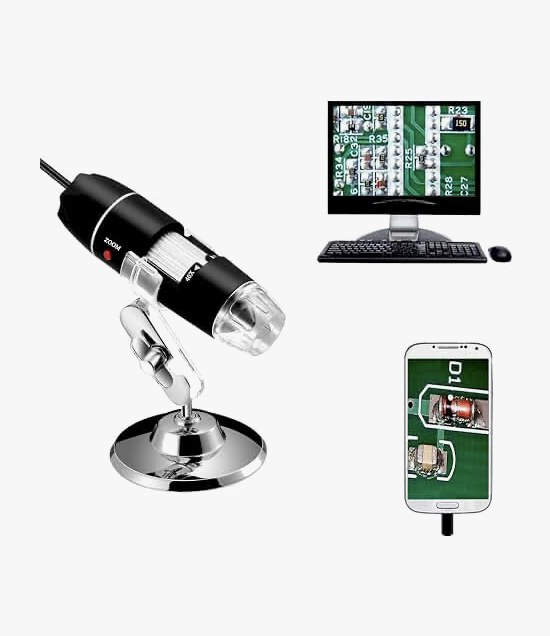

Photo: retailer listing
01Jiusion 40X–1000X USB digital microscope + included stand
Required · Buy one- Image resolution: 640 × 480
- Magnification: advertised 40–1000×
- Built-in adjustable LED
Captures the images and lights the nailfold; the included stand sets the height.
$25